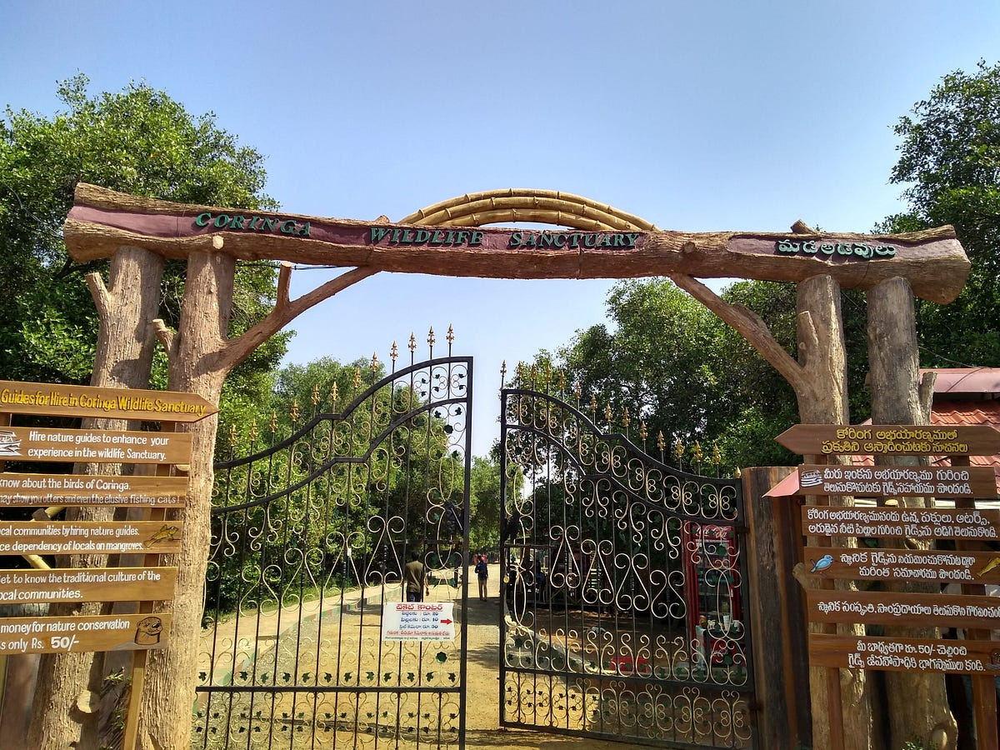

Coringa Wildlife Sanctuary
Coringa Wildlife Sanctuary is a pristine mangrove forest located near Kakinada. It is known for its rich biodiversity, including a variety of bird species and aquatic life. The sanctuary offers a serene escape into nature and is a haven for bird watchers and nature enthusiasts.
Location: Coringa, Kakinada, Andhra Pradesh, India
Ticket Price: INR 10 for Indian citizens, INR 100 for foreign tourists
Transportation: Accessible by road, with regular bus services from Kakinada. The nearest railway station is Kakinada Town.